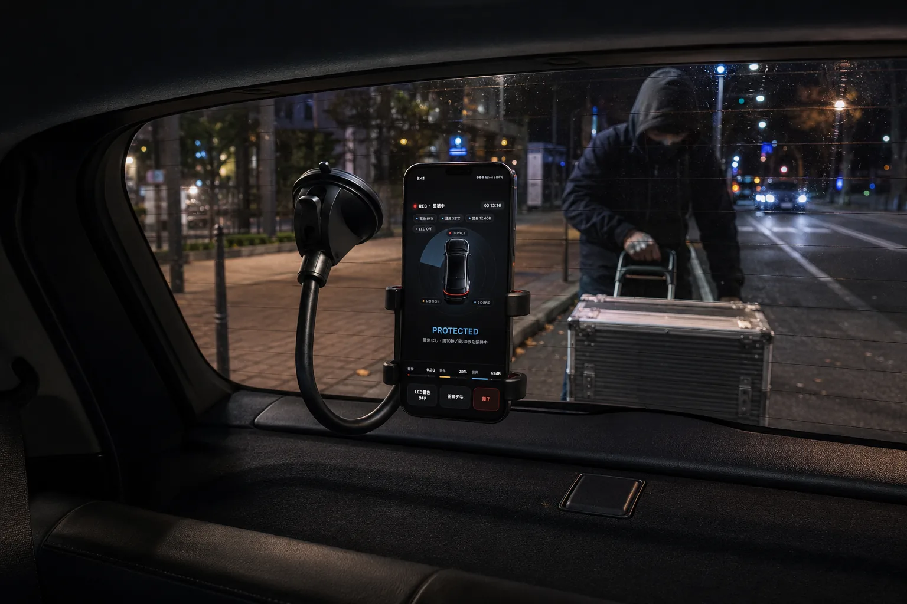

Night parking support
Use the camera view and sensitivity settings to watch a clear risk area.
Vandalism evidence
Scratches, tampering, and break-in attempts are easier to act on when you have a visible moment to review. BlackShisa - Parking Dashcam App turns a spare phone into a local evidence recorder for parked-car incidents.
Published by ICHITAP · Updated

Use the camera view and sensitivity settings to watch a clear risk area.
The phone flashlight can blink when selected detection modes trigger.
No evidence videos are stored on a developer-operated server.
After vandalism, it can be hard to know whether the damage came from a person, a passing vehicle, weather, or an object. A clip around the moment can make the difference between guessing and explaining what happened.
BlackShisa - Parking Dashcam App saves event clips locally with metadata, so the evidence remains reviewable even without internet access.
For vandalism or break-in attempts, motion detection is usually the first signal. Sound can help with glass, tool, voice, or contact noise. Impact can help if the vehicle is bumped or shaken.
Sensitivity is adjustable in three levels per detection mode. Strong sensitivity catches more but can create more false positives; weak sensitivity is quieter but may miss subtle activity.
BlackShisa - Parking Dashcam App can blink the phone flashlight when selected detection modes trigger. It is meant as a visible deterrent, not a guarantee that someone will stop.
You can choose which detection modes are allowed to trigger the flashlight. The default is off, so you decide when it fits the location.
BlackShisa - Parking Dashcam App is not law enforcement, not insurance, and not a promise of full coverage. It depends on phone placement, lighting, reflections, battery, permissions, and operating-system behavior.
Use it as a practical evidence layer for short and medium parking sessions, especially where you can place a spare phone with a stable view.
FAQ
Short answers, with the same limits the app shows in its main product page.
Yes, it can help preserve video and still-frame evidence when motion, sound, or impact is detected near the parked car.
No. Evidence is stored locally first. Optional backup goes to your own Google Drive account.
It may act as a deterrent in some situations, but it is optional and cannot guarantee prevention.